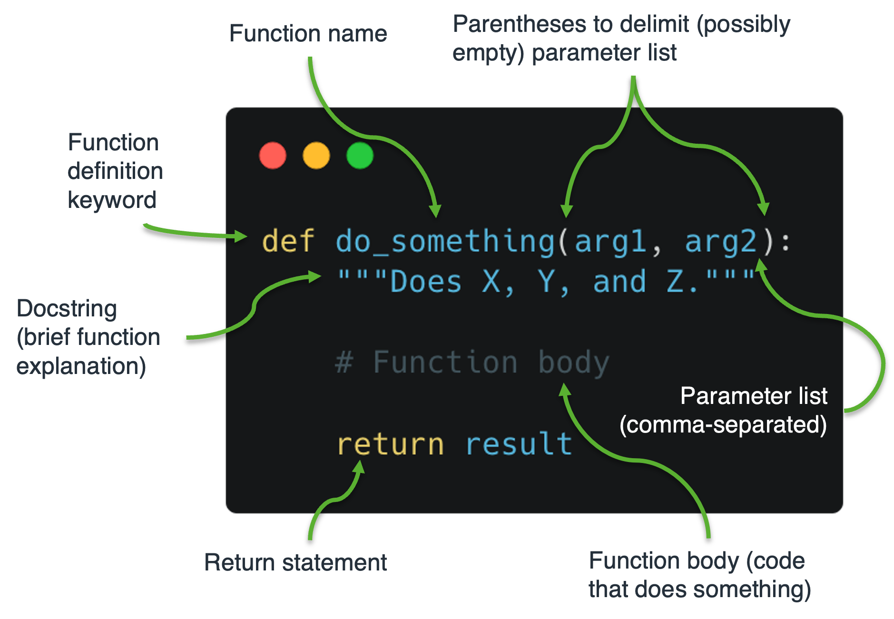

Week 2 - Operators, control flow statements, defining functions¶
I want to start this week by sharing with you some Python Easter eggs.
First up is The Zen of Python, a series of aphorisms which lay out some of the guiding principles for the design of the Python programming language. It can be viewed by running:
import this
Incidentally, this is our first look at the import statement, which we will cover in detail next week.
[30]:
import this
The Zen of Python, by Tim Peters
Beautiful is better than ugly.
Explicit is better than implicit.
Simple is better than complex.
Complex is better than complicated.
Flat is better than nested.
Sparse is better than dense.
Readability counts.
Special cases aren't special enough to break the rules.
Although practicality beats purity.
Errors should never pass silently.
Unless explicitly silenced.
In the face of ambiguity, refuse the temptation to guess.
There should be one-- and preferably only one --obvious way to do it.
Although that way may not be obvious at first unless you're Dutch.
Now is better than never.
Although never is often better than *right* now.
If the implementation is hard to explain, it's a bad idea.
If the implementation is easy to explain, it may be a good idea.
Namespaces are one honking great idea -- let's do more of those!
Next up is Python’s antigravity module. When you import antigravity, a new tab will open in your browser and display a funny Python webcomic by xkcd. Give it a try!
[31]:
import antigravity
Operators¶
Operators are the bedrock of a programming language. Let’s look at all of Python’s operators.
Logical operators¶
Last week we looked at how the logical operators and, or, and not can be used to create Boolean expressions. Here’s a quick reminder of how they work.
[34]:
# `and` returns `True` if *both* statements are `True`
print(True and True)
print(True and False)
print(False and False)
True
False
False
[35]:
# `or` returns `True` if *either* statement is `True`
print(True or True)
print(True or False)
print(False or False)
True
True
False
[38]:
# `not` *inverts* the truth value of a statement.
# i.e., it returns `False` if the statement is `True`,
# or `True` if the statement is `False`
print(not True)
print(not False)
False
True
The and and or logical operators are fairly intuitive. However, not can be tricky to use correctly as it forces the programmer into the mindset of negative logic, which exacts a higher cognitive burden.
Here’s an example of positive and negative logic used to achieve the same result. I’m sure you will agree that the first approach is more straight-forward and easier to understand.
[4]:
# Positive logic
world_is_round = True
if world_is_round:
print("The world is round.")
The world is round.
[49]:
# Negative logic
world_is_not_round = False
if not world_is_not_round:
print("The world is round.")
The world is round.
Unnecessary negation makes code hard to read and interpret, so it should be avoided.
Arithmetic operators¶
Python uses the following arithmetic operators to perform standard numerical computations.
[39]:
print("Five plus five is", 5 + 5) # Addition
print("Ten minus five is", 10 - 5) # Subtraction
print("Five times five is", 5 * 5) # Multiplication
print("Twenty-five divided by five is", 25 / 5) # Division
print("Two to the power of 4 is", 2 ** 4) # Exponentiation
Five plus five is 10
Ten minus five is 5
Five times five is 25
Twenty-five divided by five is 5.0
Two to the power of 4 is 16
Also available are the modulo (%) and floor division (//) operators, which you may, or may not, be familiar with depending on whether you have prior programming experience or a mathematical background.
The modulo operator, which gets its name from a branch of mathematics called modular arithmetic, returns the remainder of dividing two numbers.
[22]:
print("The remainder of six divided by four is", 6 % 4) # Modulo
The remainder of six divided by four is 2
A common use of the modulo operator is to check if a number is even, which can be achieved by using 2 as the modulus and checking whether the result is equal to 0.
[28]:
number = 42
if number % 2 == 0:
print(f"{number} is an even number")
else:
print(f"{number} is an odd number")
42 is an even number
Floor division is the inverse of modulo in that it returns the largest integer that is less than or equal to the result of dividing two numbers. Basically, it rounds the result of a division down to the nearest whole number.
[41]:
print("The floor of fourty-two divided by five is", 42 // 5) # Floor division
The floor of fourty-two divided by five is 8
Assignment operators¶
The equals sign (=) serves as the main assignment operator in Python, and we have encountered it many times already. It is used to assign values or expressions to the variable on the left-hand-side.
[44]:
a = 42 # Assign the value `42` to the variable `a`
print("The value of a is", a)
The value of a is 42
You could get by with only ever using the main assignment operator, but Python supports a shorthand augmented assignment notation for all arithmetic and bitwise (see below) operators.
Suppose we have two variables, a and b, and that we want to update the value of a to the sum of a and b.
[54]:
a = 42
b = 84
a = a + b # `a` is now equal to the current value of `a` plus the value of `b`
print("The value of a is", a)
The value of a is 126
The same result can be achieved using the following shorthand.
[53]:
a = 42
b = 84
a += b # Plus-equals assignment operator
print("The value of a is", a)
The value of a is 126
This works for all of the arithmetic operators outlined in the previous section. For example, here’s how to do the same but for subtraction.
[56]:
a = 42
b = 84
a -= b # Minus-equals assignment operator
print("The value of a is", a)
The value of a is -42
Whether you make regular use of the augmented assignment operators is ultimately a matter of preference. In certain contexts they can make code more readable, but for now you should stick with whatever approach makes the most sense to you.
Have a go at using augmented assignment for the other arithmetic operators (*, /, **, %, //) in the cell below.
[59]:
# Practice using augmented assignment operators in this cell
Comparison operators¶
Comparison operators are used to compare object equality, typically in a Boolean context, to control the flow of a program.
The == (equals) operator, not to be confused with the assignment operator, checks whether two values are equal.
[68]:
a = 42
b = 42
if a == b: # Equal operator
print("The value of 'a' is equal to the value of 'b'")
The value of 'a' is equal to the value of 'b'
The != (not equal) operator checks whether two values are not equal.
[69]:
a = 42
b = 7
if a != b: # Not equal operator
print("The value of 'a' is not equal to the value of 'b'")
The value of 'a' is not equal to the value of 'b'
The other comparison operators are:
>Greater than<Less than>=Greater than or equal to<=Less than or equal to
Here are some examples.
[51]:
10 > 5 # 10 is greater than 5
[51]:
True
[52]:
5 < 10 # 5 is less than 10
[52]:
True
[53]:
4 >= 4 # 4 is greater or equal to 4
[53]:
True
[54]:
7 <= 6 # 7 is not less than or equal to 6
[54]:
False
Note that comparison operators may also be used to compare non-numeric data, in which case the outcome depends on the nature of the values being compared. For example, when comparing strings, the outcome is based on lexicographical ordering.
[58]:
'a' < 'b'
[58]:
True
[59]:
'b' > 'c'
[59]:
False
When used with custom objects (e.g., a user defined class), the behavior of operators and built-in functions (e.g., len(), abs()) may actually be specified by the programmer themselves using special __dunder__ (double-underscore) methods inside the class. This is known as operator overloading, but its more than we need to get into here.
If you attempt to compare objects that do not support comparison, or for which a comparison scheme has not been specified, you will get an error message.
[60]:
# Try and compare an integer to a string
a = 10
b = '15'
a < b
---------------------------------------------------------------------------
TypeError Traceback (most recent call last)
Input In [60], in <cell line: 4>()
2 a = 10
3 b = '15'
----> 4 a < b
TypeError: '<' not supported between instances of 'int' and 'str'
Membership operators¶
The membership operators in and not in are used to check whether a value exists in a sequence or container variable. For example, we can use in and not in to check whether a list (or tuple) contains a specific item.
[33]:
shopping_basket = ['bread', 'ham', 'eggs']
print(shopping_basket)
if 'bread' in shopping_basket: # Check if bread is *in* the basket
print("bread is already in the shopping basket")
if 'donuts' not in shopping_basket: # Check if donuts is *not in* the basket
print("donuts is not in the shopping basket")
shopping_basket.append('donuts') # Add donuts to basket
print("put donuts in the shopping basket")
print(shopping_basket)
['bread', 'ham', 'eggs']
bread is already in the shopping basket
donuts is not in the shopping basket
put donuts in the shopping basket
['bread', 'ham', 'eggs', 'donuts']
Or whether a string contains a specific character.
[5]:
name = 'Fred Jones'
if 'd' in name:
print(f"The name '{name}' contains the letter 'd'")
The name 'Fred Jones' contains the letter 'd'
When checking whether an item is not in a given container, there are two possible syntaxes that give the same result. The first of these, shown below, is considered bad practice as it is less readable and harder to interpret.
[26]:
# Bad practice
not 'p' in ['p', 'y', 't', 'h', 'o', 'n']
[26]:
False
[61]:
# Best practice
'p' not in ['p', 'y', 't', 'h', 'o', 'n']
[61]:
False
Identity operators¶
The identity operators is and is not check whether two variables have the same identity.
As well as having a type and a value, every object in Python also has a numerical identity that does not change after creation, and which can be revealed with the built-in id() function. We can think of an object’s identity as its address in computer memory.
Let’s use id() to reveal the identity of the built-in constant None.
[79]:
print("The identity of None is ", id(None))
The identity of None is 4336659424
None is an example of a singleton, which means that within a particular invocation of Python, no matter what you do, its identity is not going to change.
[1]:
print(id(None))
print(id(None))
a = None
print(id(a))
4337626080
4337626080
4337626080
This means that it is perfectly safe to use is and is not to check if a value is None, which you see quite often in Python code. In particular, when a function has optional arguments, None is often assigned as the default value and an if statement is used in the body of the function to check whether the argument should influence how the function works.
Here’s an example. The function below prints whatever message you give it, but if the optional prefix argument is something other than None, the function will try and stick it at the start of msg.
[64]:
def display_message(msg, prefix=None):
"""Print a message with optional prefix."""
if prefix is None:
print(msg)
else:
print(prefix + msg)
display_message('world!') # Without prefix argument
display_message('world!', prefix='Hello, ') # With prefix argument
world!
Hello, world!
Other than in this kind of scenario, you should almost never use ‘is’ in Python, and you should certainly avoid confusing is and is not with the equality comparison operators == and !=. They may work the same in a limited set of scenarios (e.g., in the case of singletons / built-ins), but in most cases, due to the fundamental distinction between identity and equality, using is will lead to
undesirable behavior.
[4]:
None == None # None is equal to None
[4]:
True
[3]:
None is None # None has the same identity as None
[3]:
True
[5]:
# a and b are assigned the same value
a = 365.25
b = 365.25
[6]:
a == b # a is equal to b
[6]:
True
[7]:
a is b # but a does not have the same identity as b
[7]:
False
[8]:
print(id(a))
print(id(b))
140282926284144
140282626703952
Bitwise operators¶
Bitwise operators are for performing Boolean logic on individual bits of data. It is good to know that these operators exist, but you can safely ignore them as you are unlikely to need to manipulate data at such a granular level any time soon. I hardly ever use these operators.
~bitwise not&bitwise and|bitwise or^bitwise xor (exclusive or)<<bitwise left shift>>bitwise right shift
Note that, in Boolean expressions, it is possible to use the bitwise operators &, |, and ~ in place of their logical counterparts, and, or, and not. But this should be avoided as it makes code less readable and may not work as expected for all types of data (due to matters of precedence).
Control flow statements¶
Virtually every programming language incorporates statements for controlling the flow of a program. In particular, most languages support if, while and for statements. These statements are explored in further detail below.
if statements¶
We have encountered the if statement many times already. It is used to execute a block of code if a condition is true. Here’s my favorite example again.
[90]:
world_is_round = True
if world_is_round:
print("The world is round.")
The world is round.
In Python, if statements can be extended as necessary with any number of elif statements (short for ‘else if’), and optionally ended with an else statement to be executed if none of the preceding if or elif statements are true.
if / elif / else statements are evaluated in a ‘short circuit’ fashion, meaning as soon as a true statement is found, the respective bit of code gets executed and the program continues.
[12]:
# Some Boolean expressions
today_is_weekday = True
today_is_saturday = False
today_is_sunday = False
# Decide what to do
if today_is_weekday:
print("Go to work.")
elif today_is_saturday or today_is_sunday:
print("Don't go to work.")
else:
print("What planet is this?")
Go to work.
It is also possible to use more complex Boolean expressions with if statements, in which case parentheses may be used to group separate statements together. Here’s a trivial example.
[15]:
price_of_chocolate_bar = .90
money_in_pocket = 1.45
raining_outside = False
if not raining_outside and (money_in_pocket >= price_of_chocolate_bar):
print("Go to the shop and buy a chocolate bar.")
else:
print("Don't go to the shop and buy a chocolate bar.")
print("It's either raining or you haven't got enough money (possibly both).")
Go to the shop and buy a chocolate bar.
Note that it is permissible to write short if statements on a single line rather than using the customary multiline-with-indentation approach.
[110]:
# Multiline if statement with indentation
if not raining_outside:
print("Go outside")
# Single line if statement
if not raining_outside: print("Go outside")
Go outside
Go outside
This syntax should only be used for short and simple statements, and whether to use it at all is a question of taste.
Conditional expressions¶
The if keyword also features in conditional expressions, which are Python’s equivalent of the ternary operator (`?:``) <https://en.wikipedia.org/wiki/%3F:>`__ that exists in other languages such as Java and Perl.
Conditional expressions have the following syntax:
<expression_1> if <conditional_expression> else <expression_2>
Unlike normal if statements, conditional expressions do not direct the flow of a program. Rather, they function like an operator that chooses a value based on a condition.
[121]:
raining_outside = False
print("Let's go to the", 'beach' if not raining_outside else 'cinema')
raining_outside = True
print("Let's go to the", 'beach' if not raining_outside else 'cinema')
Let's go to the beach
Let's go to the cinema
A common use of conditional expressions is to select values to assign to variables. In the example below, the conditional expression (inside parentheses) determines the value of z.
[16]:
a = 39
b = 38
# c equals one plus (a if a is greater than b, otherwise b) plus two
c = 1 + (a if a > b else b) + 2
print("The value of c is", c)
The value of c is 42
while statements¶
If you want to keep doing something as long as a certain condition is true, you need a while statement.
The example below simulates a countdown to a rocket launch. First, the variable counter is initialised with a value of 5. Then, in the body of the while loop, at each iteration the value of counter is printed and subsequently decremented by 1. Finally, when counter is no longer greater than 0, the while loop terminates and the else clause is executed.
Note that the else clause at the end of a while statement is optional.
[139]:
counter = 5
while counter > 0:
print(counter)
counter -= 1 # Decrement counter
else: # This is optional
print("Blast off!")
5
4
3
2
1
Blast off!
Beware the infinite loop! This happens when a condition for a while loop remains true indefinitely. If you run the cell below, you will see what I mean.
[1]:
# Beware the inifinite loop...
while True:
print("I'm an infinite loop!")
Beware the infinite loop, but don’t be anxious or afraid if you encounter one. If you are in a notebook environment, just select Kernel>Interrupt from the menu or click on the little black square in the tool bar at the top of the page. In most other situations, pressing Ctrl+C will terminate the program.
Two other statements can be used in a while loop: break and continue.
The break statement terminates the loop without executing the else clause (if present), and the continue statement skips the rest of the code for that iteration of the loop and goes back to testing the initial expression.
Study the example below carefully. What do you think it is going to do? Now, run the code. Is the output consistent with your expectations?
[19]:
counter = 0
while True:
counter += 1
if counter % 2 == 0:
continue
print(counter)
if counter > 20:
break
1
3
5
7
9
11
13
15
17
19
21
for statements¶
Python’s for statement is used to iterate over the items of a sequence (e.g., a list, tuple, or string) in the order that they appear.
At each iteration of a for loop, the current item of the sequence is assigned to a target variable, and some code is executed. When the items in the sequence are exhausted, an optional else statement may be executed, before the loop terminates.
Here are some examples.
[20]:
for number in [1, 2, 3, 4, 5]:
print(number)
else:
print("No more numbers in the list")
1
2
3
4
5
No more numbers in the list
[26]:
for character in "Hello, World!":
print(character)
else:
print("No more characters in the string")
H
e
l
l
o
,
W
o
r
l
d
!
No more characters in the string
In practice, we don’t often see else clauses at the end of for loops, but in some situations they are useful.
Here’s an example of a for loop that makes good uses of an else clause, as well as a continue and break statement. Study it carefully and try to figure out what it is going to do. Here are some things to think about:
How many different types of object are there in
messy_list?What is the purpose of the main
forloop?What is the purpose of the first
ifstatement?What is the purpose of the innermost
for/elsestatement?What will get printed when the cell is executed?
[21]:
messy_list = [
1, 55, 'spam', 30, 3.14, 2, 22, '7',
33, 143.2, 89, 90, 137, 'carribou', 365.25,
444.3, (2, 5), 29.33, '140.7', 239, 901, 17
]
for item in messy_list:
if not type(item) == int:
print(f"'{item}' is not an integer, will continue to next iteration")
continue
for x in range(2, item):
if item % x == 0:
print(f"{item} equals {x} * {item/x}")
break
else:
# Inner loop exhausted without finding a factor
print(item, 'is a prime number')
1 is a prime number
55 equals 5 * 11.0
'spam' is not an integer, will continue to next iteration
30 equals 2 * 15.0
'3.14' is not an integer, will continue to next iteration
2 is a prime number
22 equals 2 * 11.0
'7' is not an integer, will continue to next iteration
33 equals 3 * 11.0
'143.2' is not an integer, will continue to next iteration
89 is a prime number
90 equals 2 * 45.0
137 is a prime number
'carribou' is not an integer, will continue to next iteration
'365.25' is not an integer, will continue to next iteration
'444.3' is not an integer, will continue to next iteration
'(2, 5)' is not an integer, will continue to next iteration
'29.33' is not an integer, will continue to next iteration
'140.7' is not an integer, will continue to next iteration
239 is a prime number
901 equals 17 * 53.0
17 is a prime number
The above code is a good demonstration of the main features of a for loop, but hopefully you will never have to deal with lists as messy as this…
range(…)¶
Programmers often use for loops to iterate over a range of numbers. In Python, this can be achieved by combining a for statement with a handy built-in function called range().
range() returns an object that produces a sequence of integers. The actual sequence is determined by the values passed to the start (inclusive) and stop (exclusive) arguments of the range function.
[23]:
# Count to ten
for i in range(1, 11): # start, stop
print(i)
1
2
3
4
5
6
7
8
9
10
It is also possible to specify the step to be taken between each integer in the range.
[25]:
# Count to ten in steps of two
for i in range(2, 11, 2): # start, stop, step
print(i)
2
4
6
8
10
And, with a negative step, we can count backwards.`
[30]:
# Count backwards from ten in steps of two
for i in range(10, 0, -2): # start, stop, step
print(i)
10
8
6
4
2
NOTE: In |
Defining functions¶
A function is a self-contained block of code that encapsulates a specific task, or related group of tasks, and only runs when it is called. You may also hear of functions being referred to as procedures, methods, subroutines, etc.
If you find that you are repeating yourself when you are writing code, you should probably abstract whatever functionality you are trying to achieve away into a function. This will make your code more concise, modular and flexible, and if you ever need to change how things work at a future time you will only need to make changes in a single place.
In short, functions are great, and you should considering writing one for any task that you need to do more than once.
In Python, the keyword def is used to define a function. The image below shows the other main components.

Let’s define a function that greets anyone whose name is passed in as an argument.
[27]:
def greet(name):
"""This function greets whoever's name is passed in.
Parameters
----------
name : str
Name of the person to be greeted.
"""
print("Hello, " + name + ". Have a great day!")
Now, to call this function, we need to write the name of the function followed by open and closed parentheses. Inside the parentheses we must pass a value to the required argument name, which should be the name of the person we wish to greet.
[29]:
greet(name="Fred Jones")
Hello, Fred Jones. Have a great day!
This is all well and good, but other than having the side effect of printing something to the console, the above function doesn’t do anything useful.
In a practical terms, it would be better to write the function so that it prepares and returns a greeting message, which the programmer may then print at their own discretion.
This is achieved using the return statement.
[34]:
def make_greeting(name):
"""Make and return a greeting for whoever's
name is passed in.
Parameters
----------
name : str
Name of the person to be greeted.
Returns
-------
msg : str
A nice greeting message for whoever we wish to greet.
"""
msg = "Hello, " + name + ". Have a great day!"
return msg
[32]:
msg = make_greeting(name="Fred Jones")
print(msg)
Hello, Fred Jones. Have a great day!
There’s a lot more to functions than this. Most of the finicky details concern the manner in which arguments are passed into the function. For example, functions can have positional arguments, optional arguments, keyword arguments, default parameters, etc. We will look into these in more detail at the start of next week.
Have a great week!
[46]:
print('\U0001F601')
😁